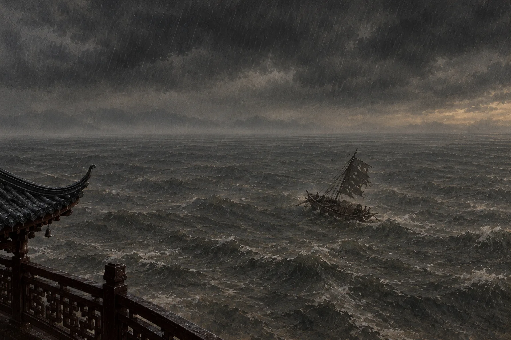

两个被贬的人
朱线示意两人被贬后所在的地方离京城有多远。图为示意，位置为近似。
教师提示：学生自己点“继续”往下走，任务没做完不能进入下一环节；打开“教师”开关可以跳过任何一步、直接切换环节。“猜一猜”不揭晓，第2课时会调出来对照。
听朗读
教师提示：朗读目前链接到B站视频，会在新窗口打开。如果有朗读音频文件，可以放进课件直接播放，并跟着朗读高亮原文。
这些字，读对了吗？
教师提示：每张卡先选读音，再选意思，十张全对才算过关。最容易错的是“汤”（shāng）和“属”（zhǔ）。
他请我写一篇记
“衔”“吞”让湖像活物一样：远山被它含在嘴边，长江被它一口吞下。
第1段庆历四年春，滕子京谪守巴陵郡。越明年，政通人和，百废具兴，乃重修岳阳楼，增其旧制，刻唐贤今人诗赋于其上，属予作文以记之。
读不懂的字，打开右上角的“原文”，点一句就能看意思。
教师提示：落实练习四第1、2题和词句品味1。学生选错时范仲淹会给提示，错两次会标出正确项。
同一片湖，两种天气
教师提示：先给2分钟出声读。每一句都要点开看过才能往下走。重点落实“去国”（练习四第3题）和“静影沉璧”。
景物对照表
教师提示：两人一组。至少填满6格才能继续。AI 只做初步反馈，老师巡视时重点看“心情”一行是否用了原文的词。
帮小舟找错
教师提示：每个学生自己帮小舟找出三处放错的地方，不需要全班同步。老师可以请两三位学生说说自己的表和小舟的有什么不同。
一悲一喜
教师提示：可以先全班齐读第3–4段，再让学生各自往下走。
我真正想说的话
在朝廷做官：担忧的是天下的百姓。
教师提示：范仲淹逐句讲第5段，每讲一句问一题，答对才能往下走。练习四第4题在最后落实。
这些话，是写给谁的？
子京兄：
你来信嘱我为岳阳楼作记……
第1段写你：政通人和，百废具兴
第5段结尾写我：微斯人，吾谁与归？
教师提示：学生写完自己的一句话，范仲淹会回应；然后黑板写出肯定、劝勉、共勉三层意思。可以请两三位学生读自己写的那句。
全文的骨架
教师提示：第1、2段范仲淹示范概括，第3、4、5段由学生自己概括（10个字以内），AI 会对照点评；三处转折句要学生在原文栏里自己找。
“先”和“后”多了什么？
天下人忧乐
君王忧乐
早时间晚
孟子：君王和百姓同忧同乐，忧乐的时间是一样的。
教师提示：练习一。学生先和伴学小舟讨论，写出自己的看法，范仲淹回应后黑板才写出参考。不需要全班同步。
当堂背下来
教师提示：读两遍后切到“遮一半”，再到“只留首字”，最后“全部遮住”，同桌互相抽查。全文背诵如需落实，需另外安排时间。
景物凭什么让人悲、让人喜？
教师提示：用学生自己第1课时的表格进入。四个角度（颜色、光线、声音、动静）逐个选，再在雨天段落里找出藏着情绪的词，最后黑板归纳方法1。
看见文章的节奏
教师提示：练习二。学生先自己在第3段找两组对偶、在第5段找三个问句，再讨论小舟提出的“四个字是不是就算对偶”，最后归纳。
例段：放学时的雨
方法1 例段放学的时候下起了雨。走廊里的灯坏了一盏，一闪一闪的。我站在教学楼门口，看着别人一个个撑开伞走进雨里，地上的积水映着灰白的天。操场上没有人，篮球架立在雨里，篮筐的网湿透了，垂下来，一动不动。
练笔1：抽一种情绪
教师提示：写满80字才能继续。“不许出现情绪词”只是练习限制，不是写作规则：范仲淹最后也点明了“感极而悲”。
猜猜我写的是什么心情
教师提示：同桌互相读对方屏幕上的练笔并猜测，再让伴学小舟（AI）当第二位读者。AI 猜错的地方，往往正是景物选得不准的地方。
根据反馈改一改
教师提示：下课收齐练笔1（纸面或请学生抄写修改稿）。第4课时开头投影两份点评。
点评练笔1
投影两份练笔，只看两点：景物选得准不准？情绪词藏得好不好？
看点一
景物选得准不准？
每个景物的颜色、声音、动静、光线，是不是都朝着同一种心情？有没有哪个景物把人带偏？
看点二
情绪词藏得好不好？
有没有直接说出“紧张”“想家”？情绪是不是藏在“一闪一闪”“垂下来”这样的词里？
教师提示：作品框下方会自动标出直接表达情绪的词，方便点评。点评后发回练笔1。
方法2：同一个地方，写出两种样子
同一片洞庭湖，雨天让人悲，晴天让人喜。拖动分隔线看一看，再读便利店的两段例段。
考砸那天便利店的冷气开得很足，冰柜嗡嗡作响。货架上的零食包装花花绿绿，我一样也不想拿。收银台后的店员低头刷着手机。门口的风铃响了一下，又响了一下，每一下都像在催我离开。
放假前一天便利店里挤满了穿校服的人，冰柜门开了又关，冒出一团团白气。我抓了一包薯片、两瓶汽水，排队时听见后面有人在笑。门口的风铃叮叮当当响个不停，像在和每个人说再见。
冰柜零食风铃
教师提示：先拖动画面引出方法2，再读例段、点“标出两段都有的东西”，回答两个问题。
同桌互看
只看一点：同一样东西，是否写出了两种感觉？在同桌的练笔上找出来，说给他听。
看的方法
- 找出两段都出现的东西，圈起来。
- 比较它在两段里分别配了什么词：动词、声音、颜色。
- 告诉同桌：哪一样写出了两种感觉，哪一样两段差不多。
方法5：先写两种常见态度，再说出自己的
回想第2课时的结构图：先写悲，再写喜，然后说“我要的不是这两种”。下面这段话也是这样写的。
铺一：悲第3段 · 雨天，感极而悲
→
铺二：喜第4段 · 晴天，其喜洋洋
→
转：我要的不是这两种第5段 · 或异二者之为
方法5 例段 · 下雨天下雨天，有人觉得烦：鞋子湿了，计划泡汤了，天也阴沉沉的。也有人觉得浪漫：雨声好听，空气清新，正适合发一条朋友圈。可我总觉得，雨天最好的地方，既不是烦，也不是浪漫，而是它让所有人都慢了下来。平时急着赶路的人，这时都站在同一个屋檐下，等同一场雨停。
铺一铺二转，说出自己的看法
练笔3：先铺后转
任选一题，用先铺后转写约100字。前两步写别人常见的两种态度，第三步写出你自己的。
AI 助教看结构
写完后可以请 AI 看看“转”有没有真正说出你自己的看法。
教师提示：“转”的部分最容易写成“两种都有道理”。提醒学生：自己的看法要和前两种都不一样。下课收齐练笔2、3。
船上的一家人
768年，大历三年
- 杜甫56岁，身上有好几种病。
- 出了三峡，在湖北、湖南一带漂泊，一家人以船为家。
- 这年冬天，他登上岳阳楼，写下这首诗。
- 两年后（770年），他在湘江的船上去世。
- 当时吐蕃屡次侵扰，西北边境不得安宁。
和范仲淹不一样的地方
范仲淹写《岳阳楼记》时，一般认为他并没有登楼，悲和喜两种景多出于想象。杜甫是真的站在楼上，写的是眼前的湖。
教师提示：讲清“56岁、多病、全家住在船上、两年后死在船上、北方有战事”这几件事，学生后面才能读懂颈联和尾联。
朱线是杜甫晚年坐船漂泊的大致路线。图为示意，位置为近似。
八句，四联
律诗有八句，每两句是一联，依次叫首联、颔联、颈联、尾联。中间两联要对仗：上下两句的词一个对一个。
对仗是怎么对的
| 颔联上句 | 颔联下句 | 颈联上句 | 颈联下句 |
|---|
| 吴楚（地方） | 乾坤（天地） | 亲朋（亲友） | 老病（又老又病） |
| 东南（方位） | 日夜（时间） | 无（没有） | 有（只有） |
| 坼（裂开） | 浮（漂浮） | 一字（一封信） | 孤舟（一条船） |
教师提示：板书四联名称。点“显示对仗”后，同一种颜色的下划线就是一对。首联不要求对仗，但这首诗的首联“昔闻”对“今上”，其实也对上了，学生问到可以肯定。
读准，读出节奏
先翻卡片正音，再跟老师读。五言诗一般读成“二 / 三”的节奏。
教师提示：重点是坼（chè）、涕泗（tì sì）。“乾坤”的“乾”读qián，不读gān，顺带提醒。教师范读，学生齐读两遍。
一联一联读懂
点一联诗，下方出现意思，画面的镜头也会跟着移动。
教师提示：颔联时指地图找吴和楚，落实词句品味1；颈联落实词句品味2；尾联切到“戎马关山北”，问他为什么哭。
镜头：大，小，大
先说出每一联写的是什么。再按顺序点下面四个按钮，看镜头怎么走。
首联 · 叙事昔闻洞庭水，今上岳阳楼
颔联 · 写大景（大）吴楚东南坼，乾坤日夜浮
颈联 · 写自己（小）亲朋无一字，老病有孤舟
尾联 · 写国家（大）戎马关山北，凭轩涕泗流
板书
大 → 小 → 大
颔联的“大”和颈联的“小”紧挨着：景越辽阔，人越孤单渺小。
教师提示：学生说一联，就点一个镜头、显示一步。最后板书“大 → 小 → 大”，为第6课时方法3做准备。
背下整首诗
练习三：齐读，分联背，全诗背。点左边的联名，可以单独遮住那一联。
教师提示：先齐读，再用联名按钮逐联遮住背，最后“全部遮住”当堂检查。
点评练笔2、3
各投影一份。练笔2看：同一样东西有没有写出两种感觉。练笔3看：转折之后有没有说出自己的看法。
教师提示：点评后发回全部练笔，第6课时修改时要用。
方法3：用大景衬托渺小的人
点下面的词给它分类：点一下是“大”，再点是“小、少”，再点取消。分完再核对。
颔联 · 吴楚东南坼，乾坤日夜浮
颈联 · 亲朋无一字，老病有孤舟
写“大”写“小”“少”
方法3
景越大，人越孤单
先把天地写得极大：坼、浮、乾坤、日夜；紧接着写自己极小：一字、孤舟、老病。大和小紧挨着，孤独就不用说出口。
教师提示：“吴楚”“东南”也写出了地域之广，学生标成“大”可以接受；“亲朋”“有”不必分类。“无”（一个字都没有）也写出了“少”，比教案多算了一个。
例段：机场
读一读，找出写“大”的词和写“小”“少”的词。
方法3 例段 · 机场机场的大厅很高，高得看不清天花板上的线条。巨大的落地窗外，飞机一架接一架地起飞、降落，跑道一直伸到看不见的地方。广播里用三种语言念着航班号。我坐在登机口最边上的一张椅子上，脚边一个行李箱，手里一张登机牌。
大小、少
练笔4：孤单的时刻
用以大衬小，写60–80字。先写环境有多大、多空、多满，紧接着写一个小小的你。
AI 助教找大和小
AI 会找出你写“大”和写“小”的地方，看它们是不是紧挨着。
教师提示：最常见的问题是写了大景，中间又插进别的内容，“小”出现得太晚。提醒学生让大和小紧挨着。
方法4：一个字的力量
点红色的字，把它换成普通的说法。读一读，差别在哪里？先说，再点“看解释”。
“衔”“吞”让湖像活物一样：远山被它含在嘴边，长江被它一口吞下。
教师提示：七组换字，每组先请学生说差别，再点“看解释”。
现代文里也一样
每一行先看原句的画面，再点“改句”，看画面怎么变。两种都看过，才会出现解释。
改三处
从练笔1–4中选一篇，至少改三处动词或数量词。改过的字会自动用绿色标出来。
改了哪里
教师提示：如果学生在纸上改，要求用不同颜色的笔标出改动；在屏幕上改，页面会自动标出。
念给同桌听
先念改前，再念改后。同桌选出改得最好的一处。
教师提示：请两三组分享“改得最好的一处”。下课收齐练笔4。
点评练笔4
投影两份，只看一点：“大”和“小”是不是紧挨着写？
教师提示：点评后发回练笔4。
两个人，一片湖
小组从三方面比较两篇课文，填进表格。然后讨论杜诗练习一、二：说理由时必须引用原文，用引号括起来。

范仲淹：想象中的一阴一晴
杜甫：眼前的天地与孤舟
| 范仲淹《岳阳楼记》 | 杜甫《登岳阳楼》 |
|---|
| 怎样写湖 | “衔远山，吞长江”几句写湖的气势，就用“前人之述备矣”收住；重点铺写一阴一晴两种想象的景，景物很多。 | 只用“吴楚东南坼，乾坤日夜浮”两句，写亲眼所见，极其辽阔。 |
|---|
| 表达什么感情 | 先写迁客骚人的悲和喜，再否定这两种，提出“不以物喜，不以己悲”“先天下之忧而忧，后天下之乐而乐”。 | 自己的老病孤独，加上对北方战事的忧虑，最后“凭轩涕泗流”。 |
|---|
| 从景到情怎样过渡 | 每段先把景物写足，再用“登斯楼也，则有……”点明心情；全文最后由景转入议论。 | 颔联写大景，颈联突然收到自己身上，以大衬小；尾联再由自己转到国家。 |
|---|
教师提示：两道题都是开放题，没有标准答案，只看理由是否引用了原文、引得对不对。输入框下方会检查引号里的话是否出自课文。
五种方法
全班说出五种方法，每种举一个课文里的例子。说完再翻卡片核对。
单元写作：《我的____楼》
任务
写一个对你有意义的地方，350–450字，在第8课时内完成。它不一定是楼，可以是一扇窗、一条路、一片海滩或一个房间。
- 至少用上五种方法中的三种。
- 在页边批注每处用了哪种方法，例如“方法3”，不要写进正文。
- 可以把之前的练笔改写进来。
- 题目中的空格由自己填写。
构思：提纲和开头
确定要写的地方，列提纲，写出开头一段。每一段准备用哪种方法，就点亮旁边的方法标签。
我之前的练笔（可以改写进来）
AI 助教看提纲
AI 会看你的方法安排是否合理、开头能不能把人带进这个地方。
教师提示：17分钟。下课收齐提纲和开头。下一课时页面会自动显示学生在这台设备上写的提纲。